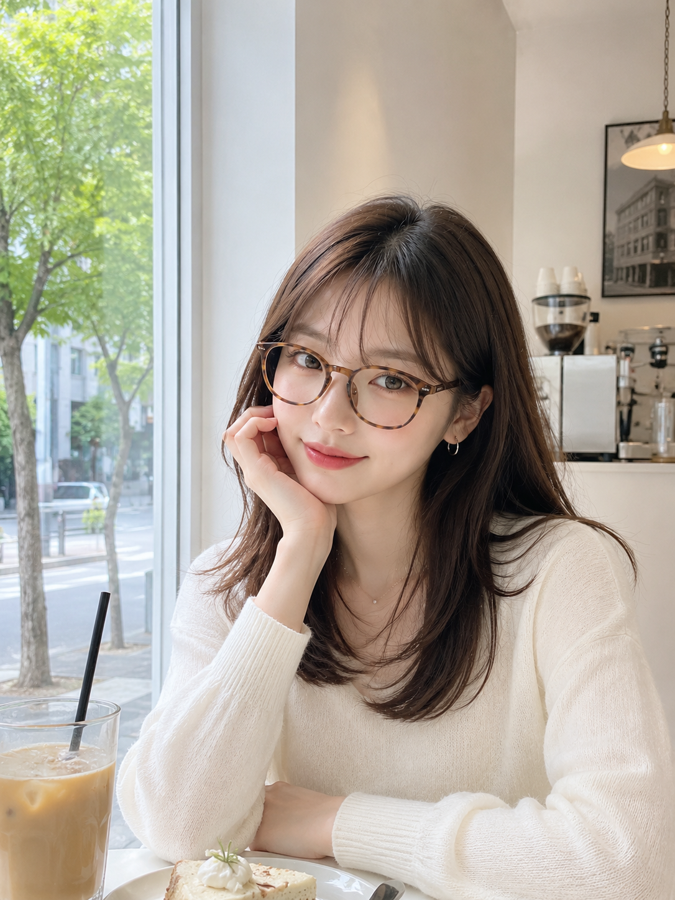

3,126件のいいね
yumeno 🦋 今日はメガネday✌️
裸眼でも盛れちゃう SEONGSU.EYEWEAR の新作かけてきたよ〜🤍 ちょっと頭よく見える？😂
あの日DMで「まず眼科行こ」って送ってくれたみんな、本当にありがとう。今は無理せず、メガネコーデも楽しんでます👓
#PR #メガネコーデ #韓国カフェ #今日のコーデ
受診したから、日常に戻れた。
早めに受診できる状況を作ることは、好きな仕事や毎日を守ることにもつながる。
「病気になって終わり」ではなく、「受診したから、また始められる」。
2026年7月xx日
ri_07 メガネ似合いすぎ😭 治ってよかった！
moka__luv 夢乃ちゃんメガネも盛れてる🤍 無理しないでね
student_med 受診できてほんまによかった。目は替えがきかない🥲